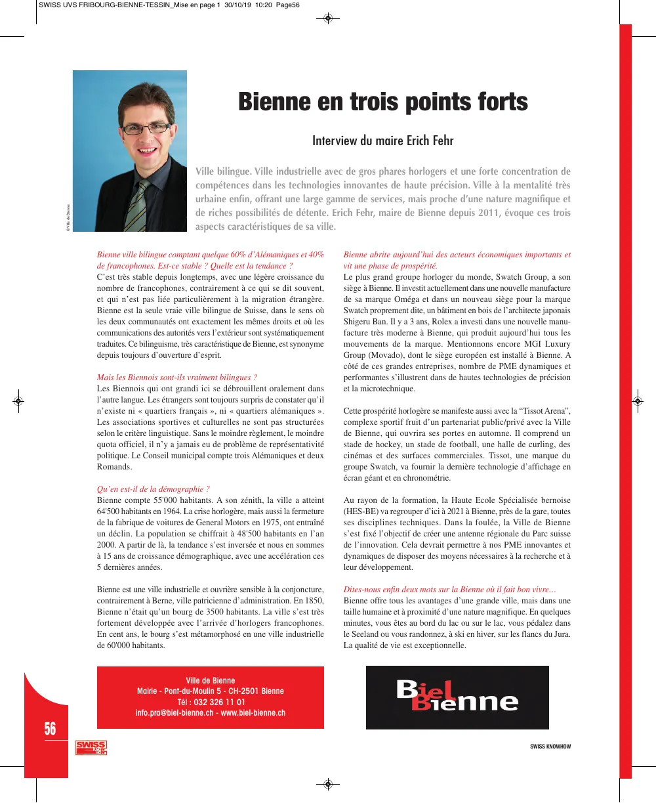
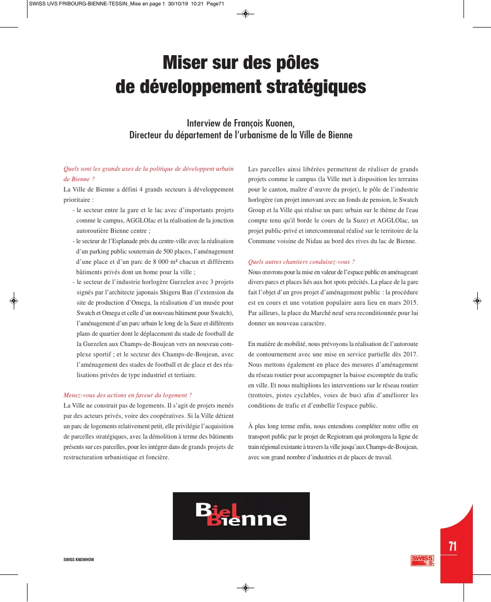
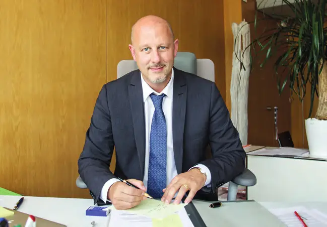
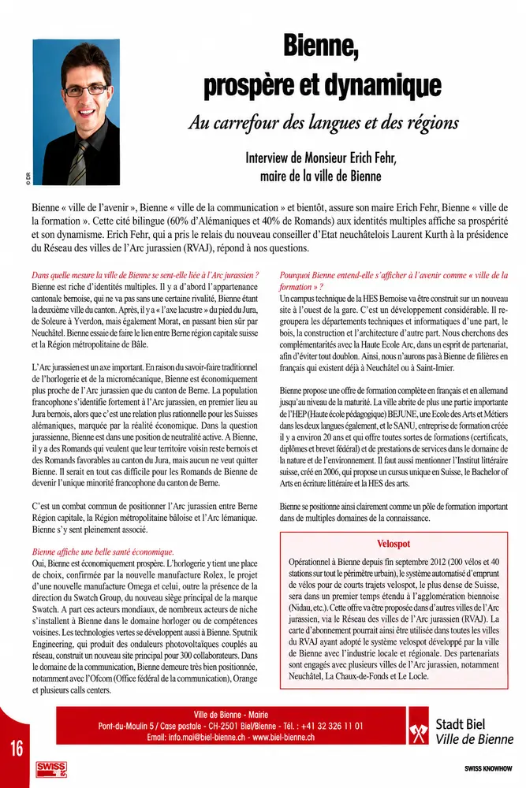

Interview · Swiss Knowhow – Région bernoise (décembre 2018)
Stadt Biel – « Unsere Stadt befindet sich seit Jahren in einer sehr dynamischen Phase »
Herr Gfeller, die Entwicklung der grössten zweisprachigen Stadt der Schweiz verläuft rasant. Immer neue Projekte sorgen auch national für Aufsehen. Wie nehmen Sie die Entwicklung wahr?
In der Tat befindet sich unsere Stadt seit Jahren in einer sehr dynamischen Phase, nicht nur quantitativ, sondern auch qualitativ: in allen Nutzungsdimensionen (Wohnen, Industrie, Bildung) wurde und wird investiert.
Wie erklären sich kurz zusammengefasst der Erfolg und der spürbare Aufschwung des Wirtschaftsstandortes Biel?
Die vorwiegend international tätigen Unternehmen der Region machen einen sehr guten Job, immer mehr Menschen entdecken die Attraktivität Biels als Arbeits- und Lebensstandort, und nicht zuletzt sind auch die Behörden sehr aktiv in der Stadtentwicklung und können dabei auf eine stabile Konsenspolitik im Parlament aufbauen. So können sie aktiv strategische Hebel wie die aktive Bodenpolitik, Private-Public-Partnerships oder die Wirtschaftsförderung einsetzen. Die Folge sind nicht nur Ansiedlungen und Investitionen, sondern auch Leuchtturmprojekte wie der Campus der Berner Fachhochschule oder der Switzerland Innovation Park Biel/Bienne.
Welche Bedeutung haben diese Leuchtturmprojekte?
Beide Projekte steigern die Attraktivität Biels als Bildungs- und Wirtschaftsstandort, sie sind Talentmagnete, und sie werden eine wichtige städtebauliche Funktion zwischen Bahnhof und See haben.
Der Mega-Bau von Swatch oder das Rolex-Produktionsgebäude machen auch optisch klar, wo die Schweizer Uhrenindustrie zu Hause ist. Was bedeutet dies für die Region über die reinen Investitionen hinaus?
Sie machen die breite und tiefe Know-How-Basis der Region im Bereich Präzision sichtbar. Und insbesondere durch die extrovertierten Bauten von Omega und Swatch, die sich auch den Besuchenden gegenüber öffnen, gewinnt Biel auch für Uhrenfans und –Touristen aus aller Welt an Profil.
Auch Georg Fischer investiert rund 100 Millionen Franken in einen Neubau in der Industriezone Bözingenfeld. Was steht für die Stadt als grösste Landeigentümerin beim Verkauf von Gewerbe- und Industrieland im Fokus?
Wichtigste Richtschnur ist eine hohe Wertschöpfung pro Landeinheit, d.h. möglichst viele nachhaltige Arbeitsplätze. Dies ist nur möglich, wenn auch effizient und relativ dicht gebaut wird. GF ist diesbezüglich ein Musterbeispiel.
Welches sind neben dem Bözingenfeld die wichtigsten Entwicklungsschwerpunkte?
Das Gebiet zwischen Bahnhof und See mit dem BFH-Campus und dem Innovationspark; das Gebiet Esplanade mitten im Zentrum und das Gebiet Gurzelen mit den Swatch-Group-Bauten und einer bedeutenden Attraktivierung des öffentlichen Raums und des Wohnangebotes im Grünen.
Es gibt ganz viele Adjektive, welche die Stadt Biel beschreiben. Was macht sie für Sie persönlich so besonders?
Das Freiheitsgefühl.
Herr Gfeller, wir bedanken uns für das Interview.
Texte paru dans Swiss Knowhow – Région bernoise (décembre 2018), p. 6, tel que publié dans l'édition imprimée. En cas d'écart, la version imprimée fait foi.
Photos
Articles
Stadt Biel – « Unsere Stadt befindet sich seit Jahren in einer sehr dynamischen Phase »
Interview mit Thomas Gfeller, Delegierter für Wirtschaft der Stadt Biel

Interview · texte intégralBienne en trois points forts
Interview du maire Erich Fehr
Des projets ambitieux pour une meilleure qualité de vie
Interview de Barbara Schwickert, directrice des travaux publics, de l'énergie et de l'environnement de la Ville de Bienne
Rendre des services d'excellence aux entreprises
Interview de Thomas Gfeller, délégué à l'économie de la Ville de Bienne

Interview · texte intégralMiser sur des pôles de développement stratégiques
Interview de François Kuonen, directeur du département de l'urbanisme de la Ville de Bienne

Interview · texte intégralUne filière bilingue unique en Suisse
Interview de Cédric Némitz, directeur de la formation, de la culture et du sport de la Ville de Bienne

Interview · texte intégralBienne, prospère et dynamique – Au carrefour des langues et des régions
Interview de Monsieur Erich Fehr, maire de la ville de Bienne
Stadt Biel
Interview mit Thomas Gfeller, Delegierter für Wirtschaft Stadt Biel